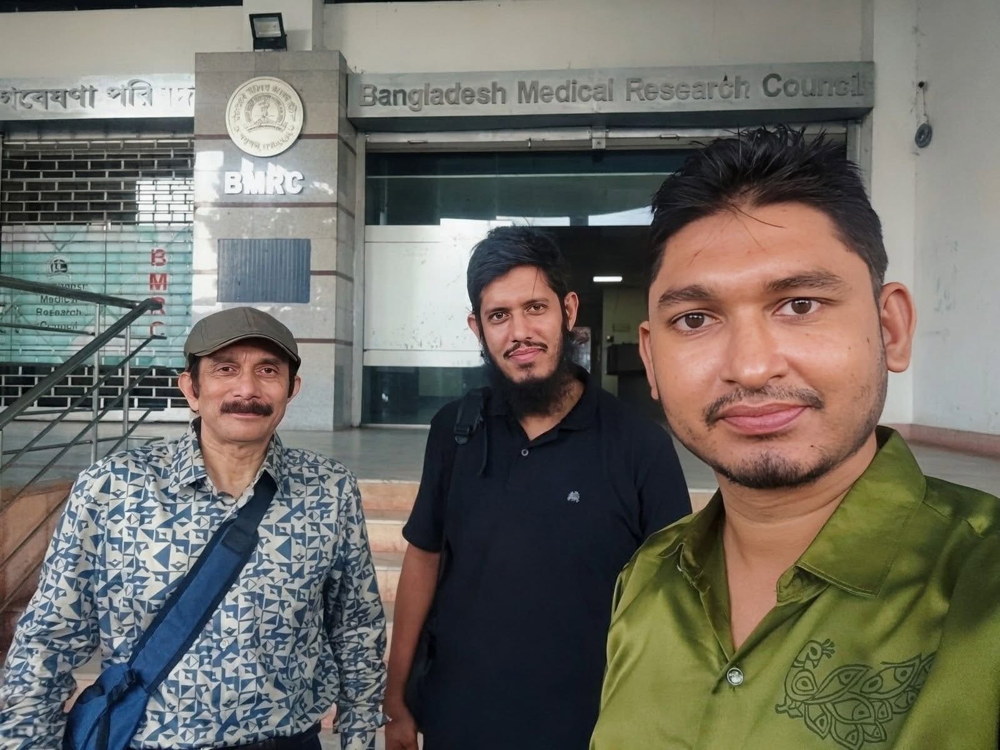

Research
11 active projects and 23 manuscripts under review — from MICS data and Rohingya health to mental health and day care.
Research Team · Dhaka, Bangladesh
Data 2 Decision (D2D) is a research team working across health, data science and public policy — running weekly sprints from backlog to publication, and turning survey and health data into evidence people can act on.
Who we are
D2D was founded by Naimul Islam.
Our work spans mental health, MICS and survey data, maternal and child health, infectious disease, health systems and digital health — with a focus on Bangladesh and low- and middle-income settings.
Founded in 2018, D2D is an Educational Research Centre based in Moghbazar, Dhaka — a place focused on data science and its practical applications. The team provides training on data analysis to support decision-making, and works to generate evidence, transform data into actionable insights, build technical capacity, and empower the next generation of researchers and data professionals.
“Data are just summaries of thousands of stories — tell a few of those stories to help make the data meaningful.”
— Chip and Dan Heath

11 active projects and 23 manuscripts under review — from MICS data and Rohingya health to mental health and day care.
Data systems, dashboards and tools — MICS data, UNHCR data collection, and team training.
Where students learn research by doing — datasets, methods and manuscript writing, mentored by the team.
Partners
The institutions and labs Data 2 Decision works with.
Loading collaborations…
Advisors
Senior advisors and collaborators who support the team.
Loading experts…
People
Loading team…
Milestones
Milestones from the team — papers, awards and sessions, shared from our Facebook page.
Loading achievements…
Updates
Updates from the team — new submissions, milestones and announcements.
Loading features…
Get in touch
For collaboration, data questions or media enquiries, reach the principal investigator:
Naimul Islam — Founder, Data 2 Decision
Email: ni19862020@gmail.com
Personal website: sites.google.com/view/naimulislam2024
Data 2 Decision — Educational Research Centre, Moghbazar, Dhaka
Facebook: Data 2 Decision
LinkedIn: Data to Decision
Team email: data2decision20@gmail.com
Phone / WhatsApp: 01913-220013
Address: Moghbazar, Modhubagh, Dhaka 1217, Bangladesh
Team members: use Member Login to see your dashboard, your CV and the PI's suggestions, and to send updates to your own details. The Team Login is for the comms team to update projects, publications, features, development work and team details.